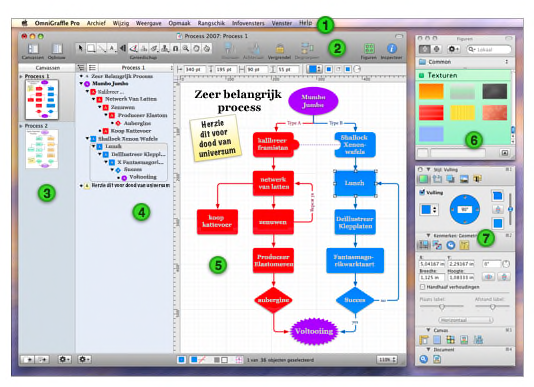

Kennismaking met de interface

 De menubalk. Net als in elk ander Mac OS X-programma biedt deze balk toegang tot alle commando's.
De menubalk. Net als in elk ander Mac OS X-programma biedt deze balk toegang tot alle commando's.  De knoppenbalk biedt snel toegang tot onderdelen die u hebt gekozen. Selecteer Pas knoppenbalk aan in het menu Weergave om uw favoriete gereedschappen op de knoppenbalk te plaatsen. Belangrijker nog is dat zich in de knoppenbalk het gereedschapspalet bevindt, waarmee u diagrammen kunt creëren. U kunt de knoppenbalk weergeven of verbergen met de witte knop aan de rechterzijde van de titelbalk.
De knoppenbalk biedt snel toegang tot onderdelen die u hebt gekozen. Selecteer Pas knoppenbalk aan in het menu Weergave om uw favoriete gereedschappen op de knoppenbalk te plaatsen. Belangrijker nog is dat zich in de knoppenbalk het gereedschapspalet bevindt, waarmee u diagrammen kunt creëren. U kunt de knoppenbalk weergeven of verbergen met de witte knop aan de rechterzijde van de titelbalk.  De canvassenzijbalk geeft alle canvassen in uw document en de lagen die ze bevatten weer. U kunt op een canvas klikken om ermee te werken in de hoofdcanvasweergave.
De canvassenzijbalk geeft alle canvassen in uw document en de lagen die ze bevatten weer. U kunt op een canvas klikken om ermee te werken in de hoofdcanvasweergave.  De opbouwzijbalk biedt een hiërarchische, weergave van het diagram op het geselecteerde canvas in tekstvorm. Dit is een uitstekende manier om een groot aantal objecten te maken, ze met elkaar te verbinden en de structuur ervan te wijzigen. U kunt ook overschakelen op de lijstzijbalk, die de rangorde van alle objecten op elke laag van het geselecteerde canvas van voren naar achteren weergeeft.
De opbouwzijbalk biedt een hiërarchische, weergave van het diagram op het geselecteerde canvas in tekstvorm. Dit is een uitstekende manier om een groot aantal objecten te maken, ze met elkaar te verbinden en de structuur ervan te wijzigen. U kunt ook overschakelen op de lijstzijbalk, die de rangorde van alle objecten op elke laag van het geselecteerde canvas van voren naar achteren weergeeft.  In de canvasweergave vindt het feitelijke tekenwerk plaats. Met de tekengereedschappen kunt u vormen maken, die u met elkaar verbindt middels lijnen. U kunt objecten door slepen verplaatsen, objecten groeperen, tabellen maken en nog veel meer dingen, die in dit overzicht niet genoemd kunnen worden.
In de canvasweergave vindt het feitelijke tekenwerk plaats. Met de tekengereedschappen kunt u vormen maken, die u met elkaar verbindt middels lijnen. U kunt objecten door slepen verplaatsen, objecten groeperen, tabellen maken en nog veel meer dingen, die in dit overzicht niet genoemd kunnen worden.  Het figurenvenster bevat een groot aantal kant-en-klare objecten voor de meest uiteenlopende doeleinden. OmniGraffle bevat standaard verschillende figuren. Daarnaast kunt u zoeken op Graffletopia, een zeer handige externe website met een uitgebreide verzameling figuren die zijn gemaakt door gebruikers van OmniGraffle.
Het figurenvenster bevat een groot aantal kant-en-klare objecten voor de meest uiteenlopende doeleinden. OmniGraffle bevat standaard verschillende figuren. Daarnaast kunt u zoeken op Graffletopia, een zeer handige externe website met een uitgebreide verzameling figuren die zijn gemaakt door gebruikers van OmniGraffle.  De infovensters bevatten alle functies die u nodig hebt voor het wijzigen van geselecteerde objecten op het canvas, het canvas zelf en het hele document. Er zijn zestien verschillende infovensters, die zijn georganiseerd op basis van het type onderdeel waarop ze effect hebben: Stijl, Kenmerken, Canvas en Document.
De infovensters bevatten alle functies die u nodig hebt voor het wijzigen van geselecteerde objecten op het canvas, het canvas zelf en het hele document. Er zijn zestien verschillende infovensters, die zijn georganiseerd op basis van het type onderdeel waarop ze effect hebben: Stijl, Kenmerken, Canvas en Document.